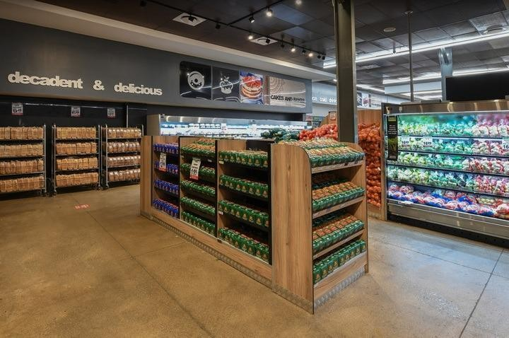

LIFESTYLE DISPLAY
Show food in real life.
Food photography, people enjoying a meal, inviting store scenes and warm lifestyle messaging help customers picture how products fit into their day.
See how the brand comes to lifeFRESHRiSE MARKET · GROUP 2
A visual merchandising strategy for a hybrid food retailer, connecting a welcoming physical store with a clear, convenient online experience.
Explore our store experience
Attractive presentation. Easy wayfinding. A familiar identity at every touchpoint.
FR.01 / PRODUCT PRESENTATION
Make the next good choice easy to spot. Clear groupings help customers move from need to product without guesswork.
SHELVING & PRODUCT GROUPING
Arrange merchandise into readable departments so shoppers can find everyday essentials, meal ideas and ready-to-eat choices quickly. Give popular products and special offers a visible, easy-to-reach position.
Example of a simple and organised product display that makes products easier for customers to find.
LIFESTYLE DISPLAY
Food photography, people enjoying a meal, inviting store scenes and warm lifestyle messaging help customers picture how products fit into their day.
See how the brand comes to life02 / TAKE IT WITH YOU
Packaging protects the product and carries the FreshRise experience beyond the store: into a customer's home, takeaway order or online delivery.
Keep food in good condition, make it easy to carry and choose formats that work for takeaway and online delivery.
Include product name, ingredients, allergen and nutritional information where required, storage instructions, brand name, contact details and online ordering information.
Repeat the same logo, colours, fonts and visual identity across every pack so customers know it is FreshRise.
SIGNAGE IS A SERVICE
Our main focus as Group 2 is signage and branding. The signs should not only make the store attractive, but should also help customers navigate, understand promotions, find products and connect with the retailer's brand.
Good signs answer the right question at the right moment: what is available, what does it cost, and where do I go next?
MEAL DEAL
Main Meal + Side + DrinkR89ORDER NOWPlaced near ordering and payment, this sign puts the product, price and promotion first. Alternative: Today's Special · 20% off selected meals. Keep the message clear, not crowded.
High-contrast words and obvious arrows help customers move around the store without constantly needing staff assistance.

Carry the same identity across storefront, menu boards, packaging, posters, staff clothing, website, social media and online ordering.
A VOICE CUSTOMERS CAN RECOGNISE
Poppins HEADLINES
Open Sans EVERYDAY INFORMATION
THE PRINCIPLE Signage is not decoration. It is a communication tool that makes the brand recognisable and the shopping journey easier.
04 / SENSORY MARKETING
The store environment shapes how customers feel while shopping. Every sensory detail should support a calm, welcoming and useful experience.
Clear signage, attractive displays, consistent colours, good lighting, clean counters, organised shelves, food photography and easy-to-read menu boards.
Soft background music can create a relaxed environment without getting in the way of conversation or staff communication.
The aroma of freshly prepared food can make the store feel welcoming and strengthen associations with freshness and quality.
Keep ordering areas bright, make product displays easy to see and use more comfortable lighting around seating.
The overall impression should be welcoming, clean, modern, comfortable, organised and customer-friendly.
05 / LEARN, THEN MAKE IT OURS
These comparison points focus on visible retail practices, not on claiming one retailer is better than another.
COMPETITOR 1
Strong, consistent branding makes the retailer easy to recognise across signs and promotional material.
Use consistent branding at every touchpoint while keeping FreshRise's own identity distinctive.
COMPETITOR 2
Clear menus and product-price communication help customers compare options and decide what to buy.
Keep information clear, add lifestyle storytelling and connect the physical store with online ordering.
| Aspect | Competitor 1 | Competitor 2 | Our Retailer |
|---|---|---|---|
| Branding | Strong and recognisable | Strong and recognisable | Consistent across physical and online platforms |
| Signage | Mainly promotional | Product and price focused | Promotional, directional and lifestyle |
| Displays | Mainly product focused | Mainly product focused | Product and lifestyle displays |
| Navigation | Basic signs | Clear signs | Clear directional signs |
| Online connection | Online presence | Online presence | Same branding online and in-store |
| Main difference | Established identity | Established identity | Focus on signage and retail identity |
THE FRESHRiSE DIFFERENCE
Signage is not being used only for decoration. It is a practical communication system for the whole customer journey.
Recognise the retailer
Find products
See prices
Notice promotions
Find store areas
Understand the brand
Connect store and website
06 / DESIGN FOR REAL DECISIONS
Visual merchandising should make shopping easier and more enjoyable. Customers should be able to answer the questions that move them through a visit, at a glance.
What can I buy?
How much does it cost?
Where do I order?
Where do I collect my food?
Where can I sit?
A CONNECTED RETAIL EXPERIENCE
The strategy brings together product displays, packaging, signage, branding and sensory details. Group 2's main focus is signage and branding: POS signs highlight promotions, directional signs guide customers, lifestyle graphics build identity, and consistent design connects the physical and online store.
Back to the beginningWhen order over R899.99
Get support all day
Get refund within 3 days!
is a brick-and-mortar hybrid retailer with an integrated online shopping channel. Customers can shop in-store, order groceries online, or collect freshly baked products through click-and-collect services.

1. Families
- Affordable weekly groceries
2. Elderly residents
- Easy access and home delivery
3. Working Professionals
- Convenient shopping experience
4. University Students
- Ready made meals and fresh bread
5. Local Residents
- Community-focused service
Since Year 2026
Our supermarket and bakery hybrid will offer a combination of everyday grocery products, fresh bakery products and convenience foods. The main focus will be on providing customers with the essential food products they need for their households, while the bakery will provide freshly prepared products that differentiate our business from a standard supermarket.
know moreThe business will therefore focus mainly on everyday groceries, supported by fresh bakery and convenience foods. Local products will be included to give the business a stronger community identity and provide customers with additional product choices. This product selection is suitable for a consumer market because customers are purchasing products to meet their individual or household needs. Consumer markets are markets where purchases are made to meet the needs of individuals or small groups, such as families or households. The bakery will also provide a specialty element within the broader supermarket range. Instead of competing only through the number of products available, the business will use freshly baked products as a point of differentiation. This creates a balance between important everyday shopping and convenient, fresh food experiences.
Overall, our product range will be broad enough to meet everyday household needs but focused enough to maintain the identity of the supermarket bakery hybrid.
Our supermarket and bakery hybrid will operate in a competitive South African food retail environment, with major competitors including Shoprite, Checkers, Pick n Pay and Woolworths Food. Shoprite is a strong competitor because of its focus on affordable everyday groceries, while Checkers competes through convenience and a wide range of food products. Pick n Pay is also a direct competitor because it provides customers with a broad supermarket product range, and Woolworths Food competes through a stronger focus on quality and premium fresh food products. Although these retailers offer similar grocery products, our business will position itself between a traditional supermarket and a specialised bakery by combining affordable everyday groceries with freshly baked products and convenience.
read moreOur main point of differentiation will be the bakery experience, with bread, pastries and other baked products prepared fresh, while customers can still purchase their everyday household groceries in the same store. We will also offer selected locally sourced products to create a stronger connection with the local community. In terms of market positioning, our business will not attempt to compete directly with large supermarkets based only on price or product volume. Instead, we will focus on value, freshness, convenience and customer experience. This positioning will allow us to appeal to customers who want the convenience of completing their grocery shopping in one place but also value fresh bakery products and a welcoming shopping environment. The combination of a supermarket and bakery therefore provides a competitive advantage by offering customers both functional and emotional benefits..
read moreOur supermarket and bakery hybrid will use a value-based pricing strategy that focuses on providing customers with good quality products at affordable and competitive prices. This pricing model is well suited to our target market, which includes families, working professionals and students who are looking for convenience while remaining conscious of their spending. We will use three pricing levels, value, Standard and Premium. The Value level will focus on important everyday products at the most affordable prices, such as a 700 g loaf of bread at approximately R17.99, 2 kg of rice at R29.99, and a dozen eggs at R14.99. The Standard level will provide customers with regular branded and freshly prepared products, such as a bakery loaf at R22.99, a pack of six fresh rolls at R19.99, and a 2 L bottle of milk at R17.99. The Premium level will include specialty and artisan products, such as an artisan sourdough loaf at R25.99, a box of six premium croissants at R59.99, and a decorated celebration cake from R199.99. This levels approach allows customers with different budgets to shop at the same store while supporting our brand position of “fresh, affordable and convenient.” We will also offer promotions such as family grocery bundles, bakery specials, multi buy discounts and loyalty rewards. For example, a Family Breakfast Bundle could include a loaf of bread, 18 eggs, 2 L milk and a packet of butter for approximately R99.99, while a Student Breakfast Combo could include a fresh roll, yoghurt and a piece of fruit for R29.99. Our business will therefore position itself between budget supermarkets and premium food retailers by offering affordable everyday products while using our fresh bakery and locally sourced products to provide additional quality and value. This pricing strategy aligns with our target market and differentiates the business through a combination of competitive prices, freshness, quality and convenience. Pricing, together with suppliers and competition, are important factors influencing the direct food retail environment.


Copyrights © 2026 - Freshrise Market, All Rights Reserved.
Distributed By - freshrise